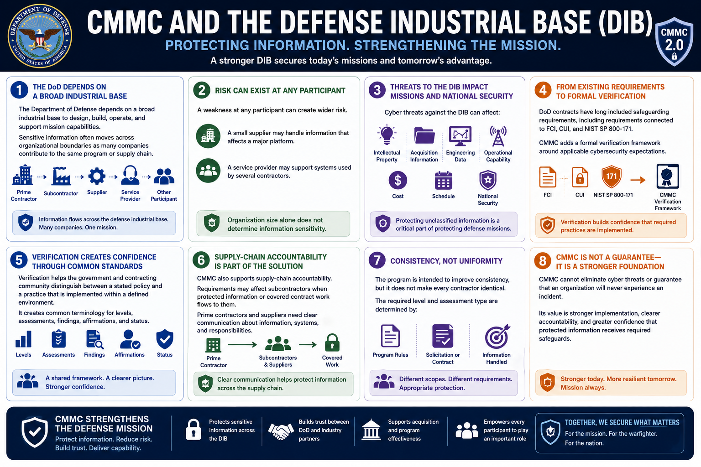

What Is CMMC 2.0?
Why CMMC Exists
Connecting to LMS... Progress: in progress
Version 1.0 | Date: 2026-06-16 | Educational overview of CMMC 2.0 concepts.

Narration
The Department of Defense depends on a broad industrial base to design, build, operate, and support mission capabilities. Sensitive information often moves across organizational boundaries as many companies contribute to the same program or supply chain.
A weakness at any participant can create wider risk. A small supplier may handle information that affects a major platform, while a service provider may support systems used by several contractors. Organization size alone does not determine information sensitivity.
Cyber threats against the DIB can affect intellectual property, acquisition information, engineering data, operational capability, cost, schedule, and national security. Protecting unclassified information is therefore an important part of protecting defense missions.
DoD contracts have long included safeguarding requirements, including requirements connected to FCI, CUI, and NIST SP 800-171. CMMC adds a formal verification framework around applicable cybersecurity expectations.
Verification helps the government and contracting community distinguish between a stated policy and a practice that is implemented within a defined environment. It creates common terminology for levels, assessments, findings, affirmations, and status.
CMMC also supports supply-chain accountability. Requirements may affect subcontractors when protected information or covered contract work flows to them, so prime contractors and suppliers need clear communication about information, systems, and responsibilities.
The program is intended to improve consistency, but it does not make every contractor identical. The required level and assessment type are determined by current program rules and the applicable solicitation or contract.
CMMC cannot eliminate cyber threats or guarantee that an organization will never experience an incident. Its value is stronger implementation, clearer accountability, and greater confidence that protected information receives required safeguards.